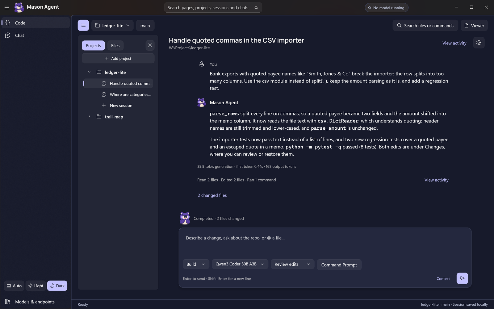
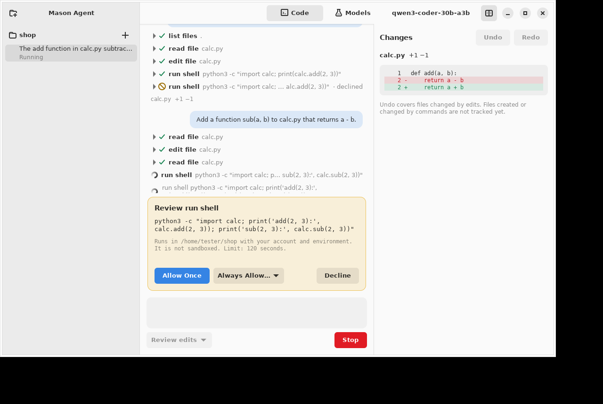
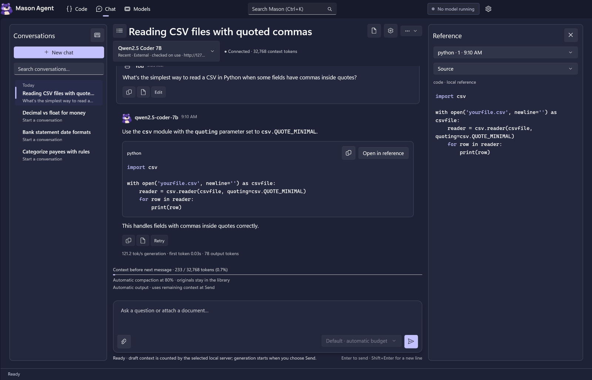
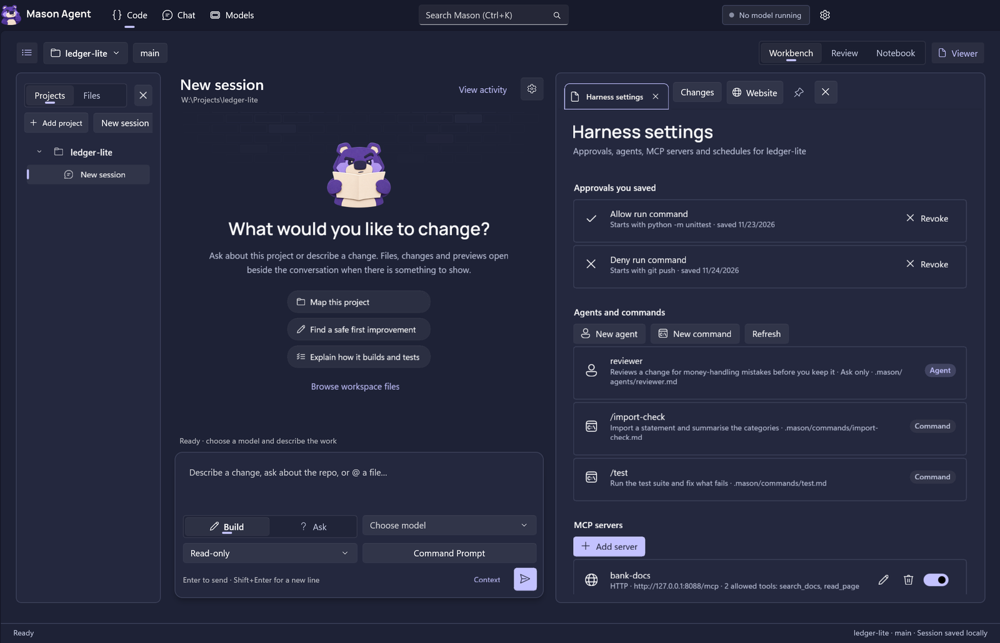

Local coding agent · Windows, macOS and Linux
Make the next move clear.
Mason Agent is a coding workspace that runs on your own local models. Add a project, decide what the agent may do, and review every change before you keep it. A native app on Windows, macOS and Linux, and mason in your terminal.
Free and open source. Other formats, requirements and install steps

A workspace with room to think
Your code, your workspace, your local models. Everything stays on your computer.
-
Projects keep their history
Add a folder and Mason Agent keeps its coding sessions, files and changes together, with the Git branch in view. Sessions are saved in your local profile.
-
Runs on your own models
Mason Agent runs GGUF models itself through llama.cpp, so there is no separate server to start or keep alive. Or connect to an OpenAI-compatible server on this computer. On Windows, Transformers models also run with Python.
-
Quick setup
Mason checks your memory, installs the right llama.cpp build, suggests a coding model that fits and, once you confirm the download, starts it.
-
You set the permissions
Sessions start read-only. Approve each edit and command, allow workspace edits, or use Auto, which runs commands in your system's own sandbox, limited to the project. Choose Always allow to stop being asked about a command, folder or tool you trust.
-
Undo a whole request
Edits show as diffs against the original files. Undo puts back everything a request changed, including files its commands created, changed or deleted, and Redo reapplies it. Files you edited since are left alone.
-
Your agents and commands
Write agents and slash commands as Markdown files in your project. Mason Agent also reads the ones you keep for Claude Code and OpenCode. On Windows you can also add MCP servers and choose which of their tools the agent may use.
-
Schedules and notifications
Windows only for nowSchedule a request to run hourly, daily, on weekdays or weekly as a background task. While you work in another app, the taskbar button shows a session's progress, and Windows notifies you when it finishes or needs your approval.
-
Chat beside your code
Windows only for nowTalk a problem through with any connected model. Answers can include code blocks and tables, and you can attach documents. Favourite models stay at the top, and long conversations compact automatically.
-
A model library
Scan your folders for model weights, see what each one can do for the agent and whether it fits in your memory, and download models from Hugging Face when you choose to.
Native on each system
Each app is written for its own platform, with that system's interface, sandbox and conventions. The mason command brings the same agent to your terminal.
-
Available
Windows
WinUI 3 and C#. Commands in Auto run in a Windows sandbox limited to your project. The complete app: installer or portable ZIP.
-
Preview
macOS
SwiftUI and Swift, engine included. Auto uses the macOS sandbox. A universal app for Apple silicon and Intel, with an installer that puts
masonon your PATH. -
Preview
Linux
GTK 4, libadwaita and C++. Auto uses a bubblewrap sandbox. A
.debfor Debian and Ubuntu, and an archive that installs for your user on other distributions.
The previews have the core of Mason Agent: sessions, reviewed edits with diffs and full undo, commands with approvals and saved rules, the four permission modes, your own agents and commands, compaction of long sessions, and finding, downloading and running models. Features marked Windows only for now above are not in them yet.
~/src/shop $ mason
Mason Agent · ~/src/shop
Nothing is answering yet, so Mason is starting the model you used last.
✓ Qwen2.5-Coder-7B is running
review edits › the cart total ignores the discount, fix it
✓ read file src/cart.py
▌ Review edit file src/cart.py
▌ - return subtotal
▌ + return subtotal - discount(subtotal)
Allow? y once a always for this project… n declineThe command line needs no setup flags. Run mason in a project folder. It uses a model that is already running, restarts the one you used last, or helps you choose or download one. /models searches and downloads from Hugging Face, /diff and /undo review and reverse changes, and /permission sets what Mason may do without asking.
Screenshots
Each app uses its own system's design language: Fluent and Mica on Windows, SwiftUI on macOS, libadwaita on Linux. All three follow your light or dark setting.






Download Mason Agent
Free, from GitHub Releases. Choose your system.
Windows Version 1.7.2 · x64
Installer or portable
The installer sets Mason Agent up for your Windows account, with no administrator rights needed. The portable ZIP runs from any folder: extract it and start MasonAgent.exe. Put an empty portable.flag file beside it to keep settings and sessions in a data folder next to the app.
Requirements
- Windows 11, x64. The portable ZIP also runs on Windows 10 version 2004 or later.
- A local model. Quick setup under Models installs llama.cpp and downloads a coding model that fits your GPU.
- A GPU is recommended. Mason Agent shows whether each model fits before you start it.
- Optional: Git for Windows, to use Git Bash as a shell for commands.
The mason command on Windows arrives with version 2.2.1. From then on the installer can add it to your PATH. Until that release, build it from source.
The mason command: tick Add the mason command to PATH in the installer, then run mason in any project folder. With the portable ZIP, add its bin folder to your PATH.
Windows SmartScreen: releases are not code-signed yet, so Windows may warn the first time you run them. Choose More info → Run anyway.
macOS Preview 2.2.1 · Apple silicon and Intel
Installer or app only
The installer puts Mason Agent in Applications and the mason command in /usr/local/bin, so it works in every terminal. With the ZIP, drag the app into Applications yourself and choose Agent → Install Command Line Tool… in the menu bar.
Requirements
- macOS 14 or later, on Apple silicon or Intel.
- A local model. Models → Suggest for this Mac installs llama.cpp and downloads a coding model that fits your memory, or use GGUF weights or a local server you already have.
First launch: the preview is not notarized by Apple, so macOS blocks it the first time. Open System Settings → Privacy & Security and choose Open Anyway. On macOS 14 you can also right-click the file and choose Open.
Preview: built and checked on a Mac for every change, but new. It has the core of Mason Agent; the features marked Windows only are not in it yet.
Linux Preview 2.2.1 · x64
Install
The package installs the app and mason for everyone on the computer:
sudo apt install ./mason-agent-linux-amd64.debThe archive installs for your user under ~/.local, with no administrator rights, and tells you if ~/.local/bin is not on your PATH:
tar -xzf mason-agent-linux-amd64.tar.gz
cd mason-agent-*-linux-amd64 && ./install.shRequirements
- x64. The
.debis built on Ubuntu 24.04 and needs that or a newer Debian or Ubuntu. - For the archive: GTK 4, gtkmm 4.10 or later, libadwaita 1.4 or later and libcurl from your distribution. The installer lists any that are missing.
- bubblewrap for Auto. Without it Mason still works, and Auto refuses to run commands instead of running them unprotected.
- A local model.
masonand the Models page install llama.cpp and download one that fits.
Preview: built and checked on Ubuntu 24.04 for every change, and not yet tried on other distributions. It has the core of Mason Agent; the features marked Windows only are not in it yet.
SHA-256 checksums are attached to each release if you want to verify a download.